Short animations of things you see every day, and the physics behind them.
Q1
Why does a raw egg stop spinning, but a boiled egg keeps going?
Inertia · Rotation · HC Verma Ch 5 & 10
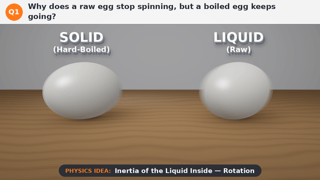
What you see
Two eggs are spun at the same speed. The hard-boiled egg keeps spinning smoothly in place. The raw egg wobbles, slows down quickly and stops within about two turns.
Why it happens
A boiled egg is solid, so the shell and everything inside turn together as one rigid body. The spin you give it is kept, and only a little friction with the table slows it down.
A raw egg is a shell full of liquid. When you twist the shell, the liquid inside does not want to start turning: that is inertia. It lags behind and sloshes around, and the friction between the liquid and the shell drags the spin away. The energy you gave the egg is wasted inside it.
Big idea: The liquid inside a raw egg doesn't want to turn, so it drags the spin away.
Try it yourself
Spin a boiled egg and a raw egg side by side on a smooth table.
Now stop the spinning raw egg with one finger for just a moment, then let go.
Watch it start turning again by itself. The liquid inside was still swirling!
Why do you jerk forward when a bus brakes suddenly?
Inertia · Newton's First Law · HC Verma Ch 5
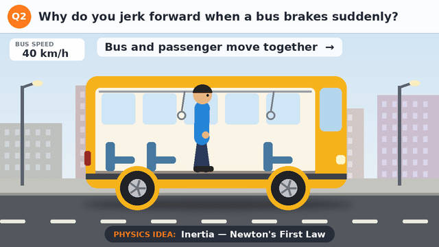
What you see
The bus and the standing passenger move together at 40 km/h. When the brakes come on, the bus slows down, but the passenger tips forward. When the bus starts again, the passenger tips backward.
Why it happens
Newton's first law says a body keeps moving at the same speed in a straight line unless a force changes its motion. This tendency to keep doing what it was doing is called inertia.
When the bus brakes, the brakes slow the bus, and friction from the floor slows your feet along with it. But nothing slows your upper body at that moment, so it carries on forward and you tip toward the front. When the bus starts suddenly, the opposite happens: your body tends to stay at rest, so you fall backward.
Big idea: Your body keeps doing what it was doing. It needs a force to change its motion.
Try it yourself
Next time you ride a bus or metro, hold the handle and notice which way your body leans when it starts and when it stops.
Put a toy car with a small toy on top on a book, then stop the book suddenly. The toy flies forward.
Explain why seat belts are important using the same idea.
Flick a card from under a coin. Why does the coin drop into the glass?
Inertia of Rest · Newton's First Law · HC Verma Ch 5
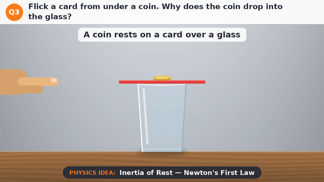
What you see
A coin rests on a card placed over a glass. A finger flicks the card away fast. In slow motion you can see the card shoot away while the coin barely moves sideways, then the coin drops straight down into the glass.
Why it happens
An object at rest stays at rest unless a force acts on it. This is inertia of rest.
The only sideways force on the coin is friction from the card. With a fast flick, the card slides out in a tiny fraction of a second, so friction acts for far too short a time to get the coin moving. Once the card is gone, nothing holds the coin up, and gravity pulls it straight down into the glass.
Pull the card slowly instead, and friction has enough time to drag the coin along with the card.
Big idea: A fast flick gives friction no time to move the coin, so it stays behind.
Try it yourself
Place a smooth playing card on a glass and a coin on top of the card.
Flick the edge of the card sharply with your finger, straight and fast.
Now try pulling the card slowly and compare what happens to the coin.
Why is a heavy box harder to start pushing than to keep moving?
Static vs Kinetic Friction · HC Verma Ch 6
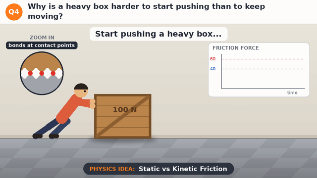
What you see
A person pushes a heavy box with more and more force. The box doesn't move, because friction grows to match the push. At 60 N the box suddenly slips free, and after that only 40 N is needed to keep it sliding. The graph shows friction rising, then dropping as soon as the box starts to slide.
Why it happens
While the box is at rest, the floor's static friction adjusts itself to balance your push exactly, but only up to a maximum (limiting friction, μₛ N). Push beyond that and the box starts to slide.
Once it slides, kinetic friction takes over (μₖ N), and it is smaller, because μₖ is usually less than μₛ.
Why? Even smooth-looking surfaces touch only at a few tiny points, and molecular bonds form at those points. At rest, the bonds have time to form properly, so a bigger force is needed to break them. While sliding, each contact lasts only a moment, so less force is needed to keep the box moving.
Big idea: Starting friction (static) is bigger than sliding friction (kinetic).
Try it yourself
Put a heavy book on a table and pull it with a rubber band tied to it.
Watch how far the band stretches just before the book starts to move.
Keep pulling at a steady speed: the band stretches less, because sliding friction is smaller.
Circular Motion · Turning on a Road · HC Verma Ch 7
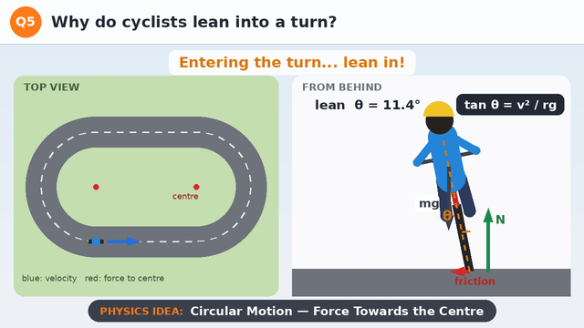
What you see
The cyclist rides upright on the straight parts of the track. On each curve they lean in towards the centre. From behind you can see the forces: weight (mg) down, the road's normal force (N) up, and friction at the tyre pointing towards the centre of the turn.
Why it happens
Anything moving in a circle needs a force towards the centre (a centripetal force). On a flat road, the only sideways force a bicycle can get is static friction from the road, acting at the tyre.
If the rider stayed upright, that sideways friction at the bottom of the bike would try to tip the bike over, outwards. By leaning in, the rider lines things up so that the friction and the normal force together point straight through their body (the centre of mass). Then there is nothing left to tip them over.
The right lean angle depends on the speed and the radius of the turn: tan θ = v²/(rg). Faster or tighter turns need a bigger lean. It is the same idea as a banked road.
Big idea: Leaning in lets friction turn you without tipping you over.
Try it yourself
Next time you cycle round a bend, notice how much you lean at a slow speed and at a faster speed.
Watch a motorbike race: on fast, tight curves the riders lean so far their knees nearly touch the road.
Work it out: at 5 m/s on a turn of radius 10 m (g = 10 m/s²), tan θ = 25/100, so θ is about 14°.
Why does a fielder pull their hands back while catching?
Impulse · Momentum · HC Verma Ch 9
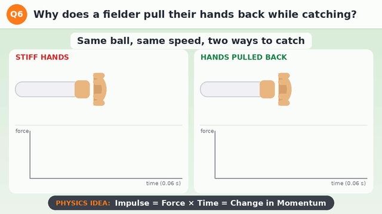
What you see
The same 160 g cricket ball arrives at 20 m/s and is caught two ways. With stiff hands it stops in about 10 ms and the force peaks at about 500 N. With the hands pulled back, the stop takes about 50 ms and the force peaks at only about 100 N. Under each catch, a graph shows force against time: a tall, thin spike versus a low, wide hump.
Why it happens
To stop the ball, its momentum must change from mv = 0.16 × 20 = 3.2 kg·m/s to zero, however you catch it.
That change in momentum equals the impulse: force × time, which is the area under the force-time graph. Both catches have the same area, 3.2 N·s.
If the area is fixed, a longer time must mean a smaller force. Pulling the hands back makes the stop last about five times longer, so the force on the hands is about five times smaller.
Big idea: More time to stop means less force.
Try it yourself
Catch a tennis ball twice: once with stiff arms, once letting your hands move back with it. Which feels softer?
Drop an egg onto a hard floor and onto a pillow (outdoors, carefully!). The pillow makes the stop take longer.
Think about it: why do cars have airbags, and why do you bend your knees when you jump down?
Conservation of Momentum · Rocket Propulsion · HC Verma Ch 9
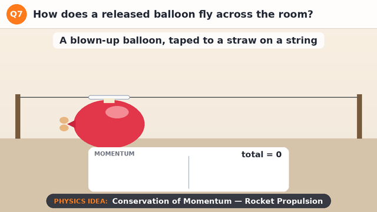
What you see
A blown-up balloon is taped to a straw threaded on a string. When it is let go, air rushes out of the back and the balloon shoots forwards along the string, shrinking as it empties. The momentum panel shows the air's momentum (backwards) and the balloon's momentum (forwards) growing together, always equal and opposite.
Why it happens
Before the balloon is let go, nothing moves, so the total momentum of the balloon and the air inside it is zero.
No outside force acts on the system along the string, so its total momentum must stay zero. As the stretched rubber squeezes air out backwards, the air gains backward momentum, and the balloon must gain exactly the same amount of forward momentum.
The same story with Newton's third law: the balloon pushes the air backwards, and the air pushes the balloon forwards. A rocket works the same way. It doesn't need air to push against, which is why rockets work in space.
Big idea: Push air backwards, and you move forwards.
Try it yourself
Thread a long string through a drinking straw and tie it tightly between two chairs.
Blow up a balloon, pinch the neck, and tape it to the straw.
Let go and measure how far it goes. Try a bigger balloon, or a string sloping upwards.
Why does an ice skater spin faster after pulling her arms in?
Conservation of Angular Momentum · HC Verma Ch 10
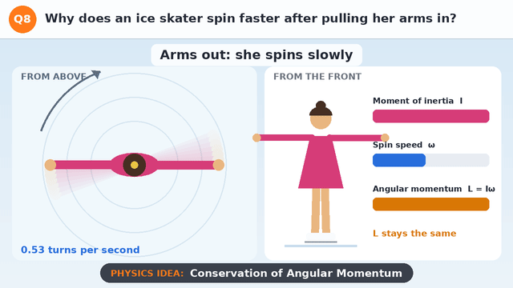
What you see
The skater spins slowly with her arms stretched out, about half a turn per second. When she pulls her arms in, she spins more than twice as fast. When she stretches them out again, she slows down. The meters show her moment of inertia (I) going down, her spin speed (ω) going up, and her angular momentum (L = Iω) staying exactly the same.
Why it happens
A spinning body has angular momentum L = Iω, where I is the moment of inertia and ω is the angular speed.
The moment of inertia depends on how far the mass is from the axis of rotation. Arms stretched out put mass far from the axis, so I is large. Arms pulled in bring that mass close, so I gets smaller.
The smooth ice gives almost no torque (twisting force), so angular momentum is conserved. If I goes down, ω must go up to keep Iω the same.
Big idea: Pull mass in towards the axis, and you spin faster.
Try it yourself
Sit on a spinning office chair with your arms and legs stretched out, and get a friend to give you a gentle spin.
Pull your arms and legs in close. You speed up!
Hold a heavy book in each hand to make the effect even stronger. (Keep it gentle and safe.)
Free Fall · Acceleration Due to Gravity · HC Verma Ch 3
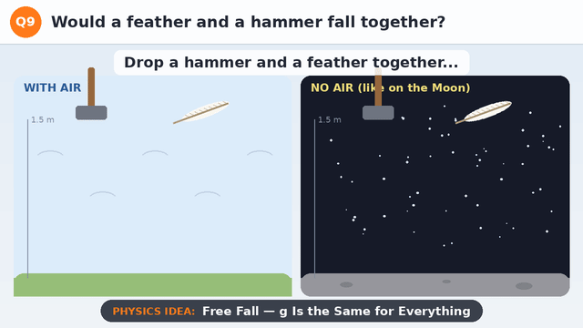
What you see
A hammer and a feather are dropped from 1.5 m at the same moment. With air (left), the hammer lands in about 0.55 s while the feather floats and drifts slowly down. With no air (right, like on the Moon), the feather and hammer fall side by side and land together. The faded copies are taken at equal time steps: they get further apart because both are speeding up.
Why it happens
Gravity pulls on the hammer with a bigger force (its weight, mg), but the hammer also has more mass, so it is harder to speed up. Acceleration = force ÷ mass = mg ÷ m = g. The mass cancels, so every object falls with the same acceleration g ≈ 9.8 m/s².
In air, there is also air resistance pushing up. For a heavy, compact hammer it hardly matters, but for a light, spread-out feather it is almost as big as the feather's weight, so the feather quickly reaches a slow, steady speed.
In 1971, Apollo 15 astronaut David Scott dropped a hammer and a falcon feather on the Moon, where there is no air. They landed at the same time.
Big idea: Without air, everything falls with the same acceleration. It's the air, not the weight, that slows the feather.
Try it yourself
Drop a book and a flat sheet of paper side by side. The book wins.
Now put the paper flat on top of the book and drop them together. The book shields the paper from the air, so they fall together.
Crumple the paper into a tight ball and drop it beside the book. Less air resistance: they land almost together.
Why do you feel lighter when a lift starts going down?
Apparent Weight · Newton's Second Law · HC Verma Ch 5
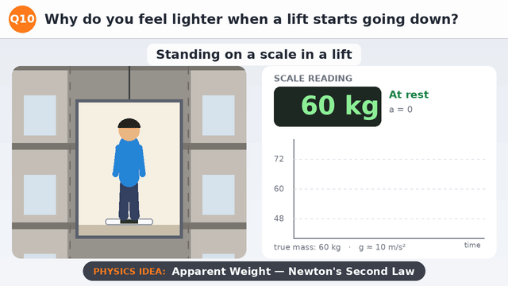
What you see
A 60 kg person stands on a bathroom scale in a lift that goes down. At rest the scale reads 60 kg. While the lift speeds up going down (2 m/s²), it reads only 48 kg. At a steady speed it is back to 60 kg. While the lift slows down to stop, it reads 72 kg. The graph traces the reading through the whole trip.
Why it happens
A scale doesn't measure gravity directly. It measures the normal force: how hard the floor (through the scale) pushes up on you.
Newton's second law for you: mg − N = ma (taking downward as positive). When the lift speeds up going down, a is downward, so N = m(g − a) is less than your weight: 60 × (10 − 2)/10 = 48 kg. When it slows down, the acceleration is upward, so N = m(g + a) = 72 kg. At a steady speed, a = 0 and N equals your weight.
Your true weight (mg) never changes. What changes is your apparent weight. In free fall (a = g), the scale would read zero, which is the weightlessness astronauts feel in orbit.
Big idea: A scale shows how hard the floor pushes on you, not your true weight.
Try it yourself
Take a bathroom scale into a lift (ask first!) and watch the reading as the lift starts, moves and stops.
Notice: going up, you feel heavier as it starts and lighter as it stops.
Hang a bag from a spring balance or luggage scale and jump gently in place. Watch the reading change.
Why does pushing a swing at the right moment send it higher?
Resonance · Simple Harmonic Motion · HC Verma Ch 12
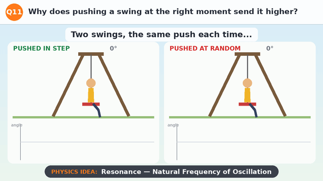
What you see
Two identical swings get the same-sized push. The left one is pushed each time it swings back and turns forward: after five pushes it swings about 30°. The right one is pushed at random moments, even more often, but it never gets much past 10°. The graphs underneath show the angle over time, with a line marking each push.
Why it happens
A swing is a pendulum. Left alone, it swings back and forth with its own natural frequency, which depends on the length of the ropes (T = 2π√(l/g) for a simple pendulum).
A push adds energy only if it acts in the direction the swing is already moving. Pushing in step with the natural rhythm, every push adds energy, so the swings build up. Random pushes sometimes act against the motion and take energy away.
This build-up when a force is applied at the natural frequency is called resonance.
Big idea: Push in step with the natural rhythm, and every push adds up.
Try it yourself
Hang a small weight on a string about 25 cm long and give it tiny taps, one per swing, always as it moves away from you.
Now tap at random. Compare how big the swings get.
Shorten the string to 10 cm. Is the natural rhythm faster or slower?
Q12
How does a huge iron ship float when an iron nail sinks?
Buoyancy · Archimedes' Principle · HC Verma Ch 13
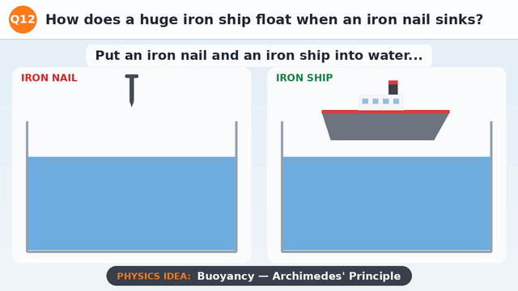
What you see
An iron nail and an iron ship go into tanks of water. The nail sinks straight to the bottom: its weight is much bigger than the small upthrust on it. The ship settles a little way into the water, bobs, and floats. The shaded part of the hull shows the water it has pushed aside, and the upthrust arrow grows until it matches the ship's weight.
Why it happens
Anything in a fluid feels an upward force, called upthrust or buoyant force. Archimedes' principle: the upthrust equals the weight of the fluid pushed aside (displaced).
A solid nail displaces only its own small volume of water. Iron is about 7.9 times denser than water, so that water weighs far less than the nail, and it sinks.
A ship's hull is hollow and wide, full of air. It sinks only until it has pushed aside water that weighs as much as the whole ship. Then upthrust equals weight, and it floats. Its average density (iron plus all that air) is less than that of water.
Big idea: It's the shape, not the material: a hollow hull pushes aside enough water to hold up its weight.
Try it yourself
Drop a ball of aluminium foil into a bowl of water. It sinks.
Now fold the same foil into a little boat. It floats!
Add coins to the boat one by one and watch it sink deeper as it pushes aside more water.
Q13
How can a needle (or an insect) rest on water?
Surface Tension · HC Verma Ch 14
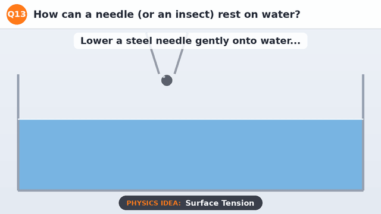
What you see
A steel needle (seen end-on) is lowered gently onto water. It doesn't sink: it rests in a small dip in the surface, like a weight on a stretched rubber sheet. Green arrows show the surface pulling up and outward on both sides, balancing the needle's weight. When a drop of soap is added, the pulls get weaker, the dip deepens, and the needle breaks through and sinks.
Why it happens
Molecules of water attract each other. A molecule inside the water is pulled equally in all directions, but one at the surface is pulled sideways and inward only. As a result, the surface behaves like a stretched elastic skin. This is surface tension.
Where the surface bends around the needle, it pulls along itself, up and outward on both sides. The upward parts of these pulls add up to balance the needle's small weight, even though steel is about 8 times denser than water.
Soap lowers the surface tension of water. The weaker skin can no longer hold the needle, so it sinks.
Big idea: The surface of water acts like a stretched skin.
Try it yourself
Lay a small piece of tissue paper on water and gently place a dry needle (or a paper clip) on it.
Wait for the tissue to soak and sink. The needle stays on the surface!
Touch the water at the edge with a soapy finger and watch what happens.
Q14
Why does a paper strip rise when you blow over it?
Bernoulli's Principle · Fluid Flow · HC Verma Ch 13
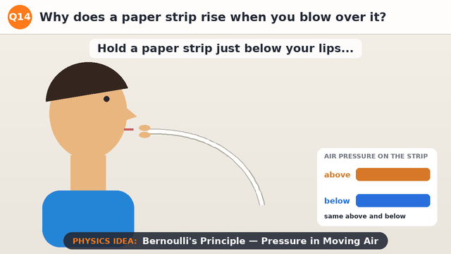
What you see
A paper strip is held just below the lips, drooping down. When air is blown over the top, the strip lifts up almost level and flutters. The air stream follows the curved top of the paper. The arrows and the panel show the pressure on the strip: normal air pressure below, lower pressure above. When the blowing stops, the strip drops back down.
Why it happens
Below the strip the air is still, so it pushes up with normal atmospheric pressure.
Above the strip, the blown air moves fast and curves along the paper. Bernoulli's principle says that along a flow, where the speed is higher, the pressure is lower. (Strictly, the pressure drops because the stream is bending along the curved paper; Bernoulli's equation links that lower pressure with the faster flow.)
With lower pressure above and normal pressure below, there is a net upward push, so the paper rises.
Big idea: Fast-moving air over the top has lower pressure, so the still air below pushes the paper up.
Try it yourself
Cut a strip of paper about 3 cm wide and 20 cm long.
Hold one end just under your lower lip so it droops, and blow hard and steadily over the top.
Now hang two sheets of paper a few cm apart and blow between them. Do they move apart or together?
Q15
Why does a straw look bent in a glass of water?
Refraction of Light · HC Verma Ch 18
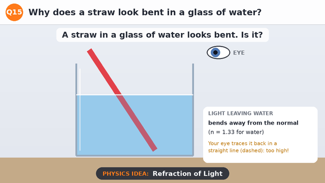
What you see
A straight straw stands in a glass of water. Rays of light leave three points on the straw under water, bend as they come out of the surface, and reach the eye. Dashed lines trace each ray straight back from the eye: they meet higher up than the real points. So the eye sees the underwater part of the straw raised and tilted, and the straw looks bent at the surface.
Why it happens
Light travels more slowly in water than in air. When it crosses the surface at an angle, it changes direction: this is refraction. Going from water (refractive index about 1.33) into air, light bends away from the normal (the line perpendicular to the surface).
Our eyes and brain assume light travels in straight lines, so we see each point of the straw where the bent ray seems to come from: higher than it really is. Seen from straight above, things under water look about 3/4 as deep (real depth ÷ 1.33). Seen at a slant, they are lifted even more.
Deeper points are lifted more, so the whole underwater part of the straw appears tilted up and the straw looks bent at the surface.
Big idea: Light bends at the surface, so things under water look higher than they really are.
Try it yourself
Put a coin at the bottom of an empty cup and move your head back until the coin just disappears behind the rim.
Keep your head still while a friend slowly pours water in. The coin comes back into view!
Look at a pencil in a glass of water from different angles. When does it look most bent?